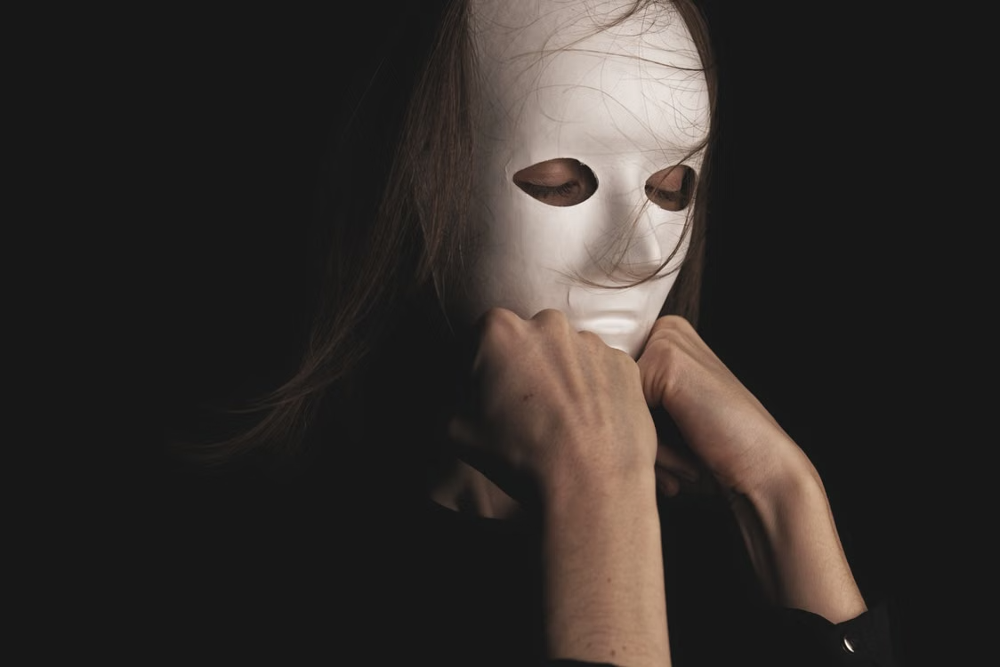

English · Feature
Behind the Disguise of Survival
The hidden toll of domestic violence—and the barriers that keep survivors from seeking help.

Every day, in homes across the Philippines, women carefully maintain a public image that hides what they are enduring. They wear long sleeves, use makeup to cover bruises, and put on a smile before facing the outside world. For Ann Angala, a former UP Mass Communication student turned band manager, home was never a safe place. It was an unpredictable environment where 18 years of emotional degradation and physical beatings were hidden behind an ordinary exterior. Her long struggle with verbal insults and hiding visible marks reflects the experiences of many Filipinas who carry an unseen burden while trying to keep their families together.
Today, domestic violence remains one of the most prevalent human rights crises in the Philippines. According to the Philippine Statistics Authority, one in four Filipinas aged 15 to 49 has experienced physical, emotional, or sexual abuse from an intimate partner. This widespread abuse is more than an isolated household dispute: it affects entire communities and can leave survivors facing deep psychological trauma, financial control, and significant barriers to safety.
Abuse at home does not always begin with physical violence. It can start with isolation and financial control. Abusers can strip women of independence by controlling daily allowances, withholding money for food or other basic needs, and forbidding them from finding work. Data from the Philippine Commission on Women (PCW) and the Department of Social Welfare and Development (DSWD) describe economic abuse as one of the tactics used to prevent victims from leaving. Constant financial restrictions can make women dependent on their partners and make it feel impossible to live on their own.
As financial control continues, physical and emotional abuse can follow. Women who experience abuse may be forced to live under constant stress, while harsh verbal insults chip away at their self-worth. When physical violence occurs, the harm goes far beyond bruises hidden beneath heavy clothing. The World Health Organization (WHO) describes the lasting health effects of intimate partner violence, including psychological harm and emotional distress that can make it harder for survivors to find safety.
Many Filipinas who experience abuse choose to remain silent. Data from the National Demographic and Health Survey (NDHS) reveals that 41% of women who experienced physical or sexual violence never sought help or told anyone about their situation. Fear of retaliation is one reason: survivors may worry that reporting an abuser to the police could lead to further punishment if their partner finds out. Societal expectations that families must stay intact at all costs can also force women to carry the burden of abuse in secret. When survivors do not trust local Barangay Violence Against Women (VAW) desks or police officers to maintain confidentiality, they may feel unsafe speaking up.
For survivors to feel safe stepping out of the shadows and speaking about abuse, the government must enforce Republic Act No. 9262 and ensure that survivors can access protection, including a Barangay Protection Order (BPO), when they need it. Every barangay should also maintain a functional VAW Desk. Communities and institutions should raise awareness of available support so survivors know they do not have to carry the burden alone.
However, action should not come from the government alone; society has a role too. We should challenge social norms, including the idea that family disputes should always remain private, when they normalize abuse, protect perpetrators, and make survivors less able to speak up. These attitudes can also expose children in the home to intergenerational trauma.
Domestic violence thrives in silence and social neglect, but it loses power when a community refuses to look away. True freedom for Filipinas experiencing abuse requires support rooted in understanding rather than judgment, and legal protections upheld with integrity in every barangay. Continued silence protects perpetrators. By breaking that silence, we can help survivors reclaim their dignity and find justice and lasting peace in their homes.
References
- Angala, A. (2021). “I was a victim of domestic abuse for 18 years, until I found my inner strength.” PhilSTAR Life. Read source
- Department of Social Welfare and Development. (2021). Programs and services for victims of gender-based violence. Republic of the Philippines. DSWD
- Official Gazette of the Republic of the Philippines. (2004). Republic Act No. 9262: Anti-Violence Against Women and Their Children Act of 2004. Read the law
- Philippine Commission on Women. (2020). Addressing violence against women in the Philippines: Policy brief and reporting mechanisms. Read source
- Philippine Statistics Authority, & ICF. (2018). Philippines National Demographic and Health Survey 2017. Read source
- Philippine Statistics Authority, & ICF. (2023). Philippines National Demographic and Health Survey 2022. Read source
- World Health Organization. (2021). Violence against women prevalence estimates, 2018: Global, regional and national prevalence estimates for intimate partner violence against women and global estimates of non-partner sexual violence against women. Read source